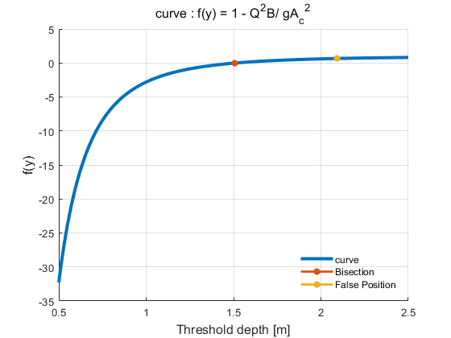

clc ; clear ; close all
g = 9.81 ;
A = @(y) 3*y + 0.5*y^2 ; B = @(y) y+3 ;
equ = @(y, Q) 1- (Q^2)*B(y)/(g*A(y)^3) ;
y = 0.5 : 0.01 : 2.5 ; y_vec = ones(1, length(y)) ; j = 1 ;
for i = y, y_vec(j) = equ(i,20) ; j = j+1 ; end
hold on, plot(y, y_vec, 'LineWidth', 3, 'DisplayName', 'curve'), grid on
title('curve : f(y) = 1 - Q^2B/ g{A_c}^2', 'FontSize', 12)
xlabel('Threshold depth [m]', 'FontSize', 12), ylabel('f(y)', 'FontSize', 12)
[root_bi, fxr_bi, ea_bi, iter_bi] = bisect(@(y) equ(y, 20), 0.5, 2.5, 1.0, 10) ;
f_check_bi = equ(root_bi, 20) ;
plot(root_bi, f_check_bi, '*-', 'LineWidth', 2, 'DisplayName', 'Bisection')
[root_fp, fx_fp, ea_fp, iter_fp] = falposition(@(y) equ(y, 20), 0.5, 2.5, 1.0, 10) ;
f_check_fp = equ(root_fp, 20) ;
plot(root_fp, f_check_fp, '*-', 'LineWidth', 2, 'DisplayName', 'False Position')
legend('boxoff'), legend('Location', 'southeast')
data_mat = [root_bi, fxr_bi, ea_bi, iter_bi ; root_fp, fx_fp, ea_fp, iter_fp ] ;
fprintf(' root f(root) ε_a iteration \n'), disp(data_mat)
root f(root) ε_a iteration
1.5078 -0.0136 0.5181 8.0000
2.0908 0.6569 1.5914 10.0000
